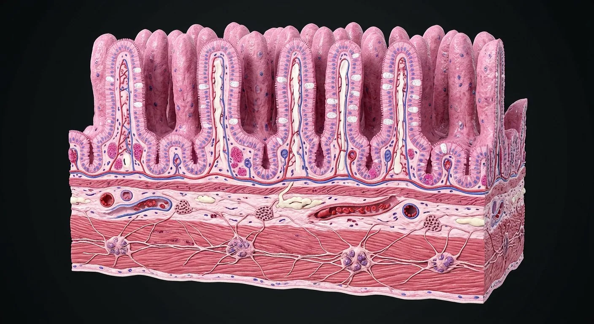

How this part of the body works
The small-intestinal wall has mucosa (epithelium, lamina propria, muscularis mucosae), submucosa, muscularis externa (inner circular and outer longitudinal layers) and serosa/adventitia depending on site. Villi expand surface area and crypts house renewing stem cells, antimicrobial Paneth cells and secretory lineages. Enterocytes absorb nutrients; goblet cells secrete mucus; enteroendocrine cells release signals. The submucosal plexus regulates local secretion/flow, while the myenteric plexus between muscle layers coordinates motility. These locations are different from the intestinal lumen.
Read the anatomy, part by part
These 18 structures correspond to the chapter’s regional illustration or schematic. Each entry separates location, function and a clinical point.
Villus
Fingerlike projection of small-intestinal mucosa with epithelial cover and lamina propria core.
What it doesExpands absorptive surface.
Clinical connectionTypical colon lacks villi.
Crypt of Lieberkühn
Epithelial invagination between villus bases toward muscularis mucosae.
What it doesHouses stem and secretory cell niches.
Clinical connectionCrypt loss can impair epithelial renewal.
Enterocyte
Absorptive columnar epithelial cell with apical microvilli.
What it doesTakes up digested nutrients.
Clinical connectionLoss of brush-border surface impairs absorption.
Brush border
Dense apical microvilli on enterocytes, not the large villi themselves.
What it doesIncreases membrane area and supports digestive enzymes.
Clinical connectionVillus and microvillus are different scales.
Goblet cell
Mucin-producing epithelial cell scattered among enterocytes.
What it doesLubricates and helps protect mucosal surface.
Clinical connectionCell proportions vary along intestine.
Paneth cell
Granule-rich cell near base of small-intestinal crypt.
What it doesProduces antimicrobial molecules supporting stem-cell niche.
Clinical connectionTypical mature Paneth cells are much less common in normal colon.
Crypt stem cells
Progenitor population near crypt base continuously renewing epithelium.
What it doesReplaces short-lived epithelial lineages.
Clinical connectionRapid turnover makes mucosa vulnerable to cytotoxic injury.
Enteroendocrine cell
Scattered hormone-secreting epithelial cells.
What it doesSense nutrients and release regulatory peptides.
Clinical connectionFunctions differ across multiple cell subtypes.
Lamina propria
Loose connective tissue inside villi and around crypts with immune cells/vessels.
What it doesSupports epithelium and immune surveillance.
Clinical connectionInflammation changes villus and crypt architecture.
Villus capillaries
Small blood vessels in villus core.
What it doesCarry many absorbed water-soluble nutrients to portal blood.
Clinical connectionDietary fat initially uses lymphatic route instead.
Central lacteal
Blind-ending lymphatic vessel within villus core.
What it doesCarries chylomicron-rich lymph from absorbed dietary fat.
Clinical connectionNot a blood capillary.
Muscularis mucosae
Thin smooth-muscle sheet at base of mucosa.
What it doesLocally moves mucosal folds/villi.
Clinical connectionSeparates mucosa from submucosa.
Submucosa
Supportive connective tissue carrying larger vessels and nerves.
What it doesAnchors mucosa and houses submucosal plexus.
Clinical connectionDuodenal Brunner glands occur in submucosa.
Submucosal plexus
Neural network chiefly in submucosa (Meissner).
What it doesCoordinates secretion, local blood flow and mucosal function.
Clinical connectionDistinct from myenteric motility plexus.
Circular muscle
Inner smooth-muscle layer of muscularis externa.
What it doesNarrows lumen during segmentation/peristalsis.
Clinical connectionMyenteric plexus lies external to it.
Myenteric plexus
Auerbach network between circular and longitudinal muscle layers.
What it doesCoordinates gut motility.
Clinical connectionEnteric neuropathy can impair transit.
Longitudinal muscle
Outer smooth-muscle layer of muscularis externa.
What it doesShortens segments during coordinated movement.
Clinical connectionForms outer boundary of myenteric plexus plane.
Serosa
Visceral peritoneal covering where bowel is intraperitoneal.
What it doesReduces friction with adjacent bowel.
Clinical connectionRetroperitoneal segments have adventitia rather than free serosa on fixed surfaces.
Deeper structures and tissue layers
These 2 additional entries give anatomical context. They are deliberately not assigned a photographic pin on the regional image.
Brunner glands
Mucus-rich glands in duodenal submucosa, especially proximal duodenum.
What it doesRelease alkaline secretion protecting from gastric acid.
Clinical connectionDo not expect them throughout jejunum and ileum.
Peyer patches
Aggregated lymphoid follicles particularly prominent in ileal mucosa/submucosa.
What it doesSample luminal antigens via overlying specialized epithelium.
Clinical connectionNormal density varies along small intestine.
Five questions about Small intestine · wall & enteric plexuses
Short answers grounded in the structures described above. Use the illustrated guide for anatomical context.
What are the layers of the small intestinal wall?
From lumen outward they include mucosa, submucosa, muscularis externa and serosa or adventitia depending on the segment.
What do intestinal villi and crypts do?
Villi expand the absorptive surface. Crypts contain renewing epithelial cells and other specialized cells that help maintain the mucosa.
What is the villus?
Fingerlike projection of small-intestinal mucosa with epithelial cover and lamina propria core. Function: Expands absorptive surface.
Where is the enterocyte located?
Absorptive columnar epithelial cell with apical microvilli. Function: Takes up digested nutrients.
What is the function of the goblet cell?
Function: Lubricates and helps protect mucosal surface. Mucin-producing epithelial cell scattered among enterocytes.
Related anatomy guides
Follow these connected structures and body systems in the illustrated atlas.
 Stomach & intestinesThe gastrointestinal tract from oesophagus to rectum, with the villus that does the absorbing.↗
Stomach & intestinesThe gastrointestinal tract from oesophagus to rectum, with the villus that does the absorbing.↗ LiverThe body's chemical plant: metabolism, bile, clotting factors, detoxification and storage.↗
LiverThe body's chemical plant: metabolism, bile, clotting factors, detoxification and storage.↗ PancreasA dual gland: digestive enzymes from acini, hormones from the islets of Langerhans.↗
PancreasA dual gland: digestive enzymes from acini, hormones from the islets of Langerhans.↗ Autonomic nervous systemThe unconscious half of the nervous system: sympathetic accelerator, parasympathetic brake, and the gut's own enteric brain.↗
Autonomic nervous systemThe unconscious half of the nervous system: sympathetic accelerator, parasympathetic brake, and the gut's own enteric brain.↗Further reading
General anatomy references and related source chapters for continued study. These links do not make the digital illustrations clinical images or certify every anatomical variant.
This educational material does not provide medical advice, diagnosis or treatment. A named clinical reviewer has not been claimed for this page.
Open the interactive plate, pins, animated schematic and self-test.